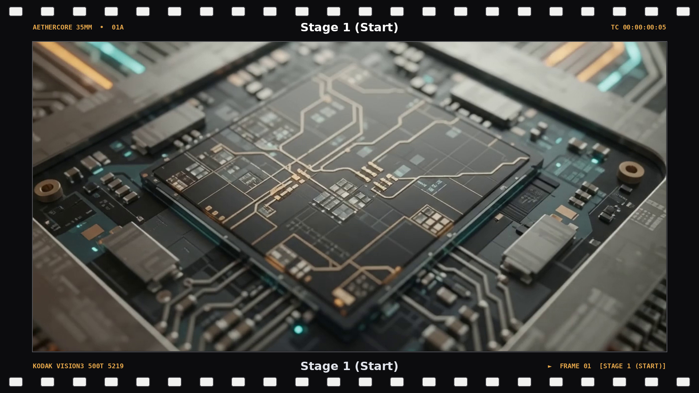
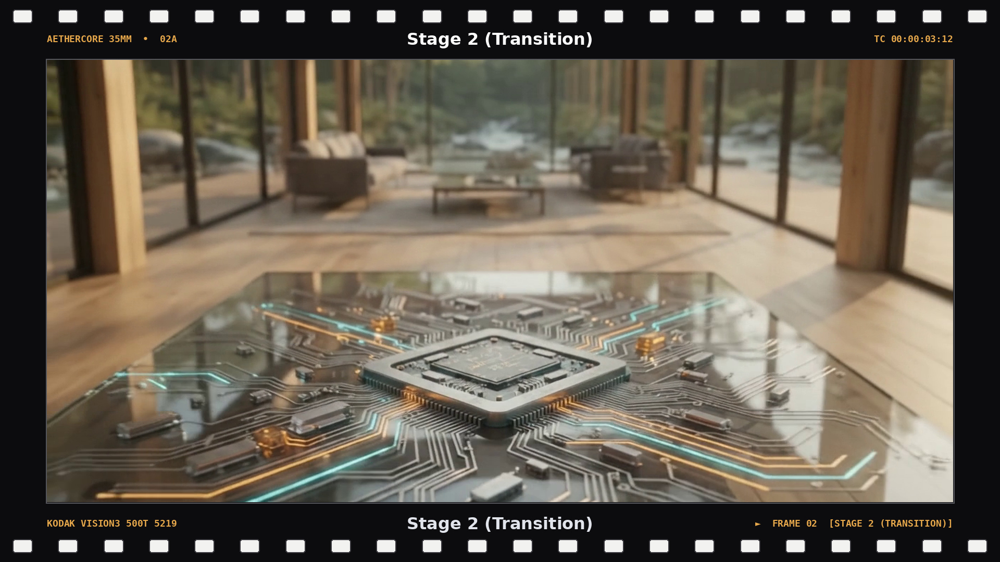
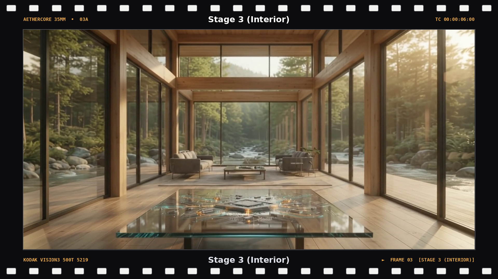
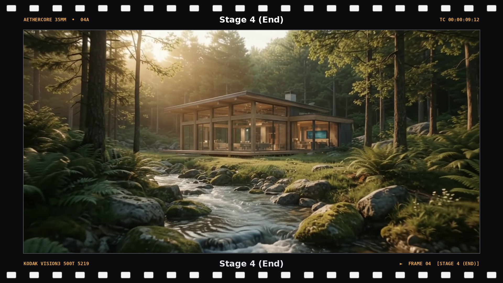

01 · OriginPhotonic circuitry
A single, continuous pullback from a photonic processor to a quiet forest habitat—where advanced computing and the living world meet.
The camera begins at the scale of a glowing processor, then glides through a warm timber interior and out to the ecosystem beyond.

01 · OriginPhotonic circuitry

02 · PassageMaterial and light

03 · HabitatInside and outside

04 · ReturnForest and water